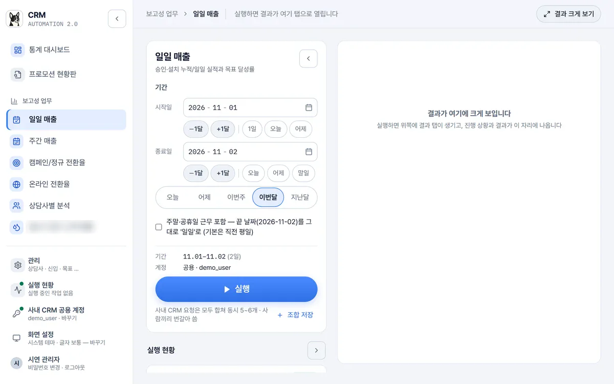

- Python
- Rust (PyO3)
- FastAPI
- Redis · arq
- Playwright
- Docker
CRM 분석 자동화 2.0 — 화면을 누르던 자동화에서, 요청을 직접 주고받는 작업 엔진으로
일반 웹 자동화가 통하지 않는 사내 CRM(넥사크로)을 사람 대신 눌러 주던 1.0에서 시작했습니다. 2.0은 화면이 보내는 조회 요청의 틀을 한 번 잡아 두고 날짜·쪽만 바꿔 응답을 직접 받고, 계산까지 서버가 끝내는 여러 사람이 함께 쓰는 웹 작업 엔진입니다. 11월 2일, 메뉴마다 1.0 결과와 칸 단위로 대조한 뒤 1.0을 정리하고 2.0만 운영합니다. 새 계산은 운영 복사본에서 돌려 다른 칸이 0개일 때만 넣습니다.
날짜 하루치마다 반나절 걸리던 연계 실적 확인 → 한 달치 4분, 사람은 남은 1%만 확인.
하루치마다 반나절이 걸려 하루만 밀려도 다음 날 일이 두 배가 됐고, 쌓일수록 따라잡기 어려웠습니다. 지금은 한 달치를 하루에 몰아서 해도 됩니다(실행 약 4분 + 남은 1% 확인). 밀리면 쌓이던 확인 업무가 몰아서 해도 되는 일이 됐습니다.
- 이전 전체 계약에서 우리 것이 아닌 계약과 외부 채널 상담사 건을 거르고, 남은 계약을 하나씩 열어 우리 팀이 먼저 터치했는지 확인했습니다. 영업일 하루치마다 한 명이 반나절 이상.
- 2.0 거르기부터 터치 확인(고객번호·연락처 대조)까지 자동. 한 달치 1회 실행 약 4분(최근 62회 중앙값 4분 16초).
- 11/6 실측 약 26영업일치 원본 약 2.4만 건 → 자동 거르기 뒤 약 7천 건 → 자동 확정 53건, 사람이 볼 '확인 필요' 236건(원본의 약 1%). 사람 기준 13인일 이상이 '실행 4분 + 남은 1% 확인'으로 줄었습니다.
| 업무 | 기존 | 지금 | 기존 → 지금 | 줄어든 정도 |
|---|---|---|---|---|
| 연계 터치 확인 | 하루치마다 반나절 이상 | 한 달치 약 4분 + 남은 1% 확인 | 하루치마다 반나절 이상 → 한 달치 약 4분 + 남은 1% 확인 | 사람 몫 약 1% |
| 일일 매출 보고 | 수시간 | 약 30초 | 수시간 → 약 30초 | 99% 넘게 |
| 주간 매출 보고 | 반나절 | 약 50초 | 반나절 → 약 50초 | 99% 넘게 |
| 미배송 점검 | 30분~1시간 | 약 15초 | 30분~1시간 → 약 15초 | 약 99% |
| 예약 체험 신규 조회 | 30분~1시간 | 약 20초 | 30분~1시간 → 약 20초 | 약 99% |
| 상담원 실적 | 30분~1시간 | 약 15초 | 30분~1시간 → 약 15초 | 약 99% |
| 메뉴 | 1.0 → 2.0 |
|---|---|
| 일일 매출 보고 | 122초 → 약 30초 (약 4배) |
| 주간 매출 보고 | 143초 → 49초 (약 3배) |
| 미배송 점검 | 100초 → 15초 (약 6.7배) |
| 예약·체험 점검 | 145초 → 18초 (약 8배) |
| 상담사별 분석 | 70초 → 26초 (약 2.7배) |

가짜 데이터 시연 서버 실제 운영 데이터 없이 시연용 서버에서 찍었습니다. 상담사·금액·건수는 가짜 값이고, 회사·시스템·제품 이름은 바꾸거나 흐리게 가렸습니다.
펼쳐서 — 2.0 구조 · 새 기능 · 신뢰 · 1.0
구조작업마다 브라우저를 새로 띄우던 방식에서, 계정마다 브라우저 하나를 여러 작업이 나눠 쓰는 탭 엔진 + 작업 대기열(Redis · arq)로. 로그인은 계정당 한 번. 무거운 작업과 가벼운 작업이 겹쳐도 가벼운 쪽이 먼저 자리를 받습니다.
- 버튼 하나로 끝까지 — 진행 로그가 한 형식(무엇 · 기간 · 건수 · 초)으로 실시간, 끝나면 표·엑셀이 바로
- 같은 조건을 10분 안에 누가 돌렸으면 기다림 없이 그 결과를 받음
- 통계 대시보드 — 아침·저녁 예약 갱신, 기간을 골라 다시 계산
- 프로모션 현황판 — 규칙을 화면에서 조립, 진행 중 순위 · 주간 한눈에 · 공지 캡처 · 수식 포함 엑셀
- 추출의 터치 분류 — 최근 상담 이력을 대조해 이미 연락한 고객을 다시 돌리지 않게
- 내 메뉴 퀵모음 — 별표로 고르고 끌어서 순서, 최근 30일 많이 쓴 5개는 자동
- 주간 보고는 'N주차'로 고르기 — 회사 주차·공휴일 반영
- 일보 누적 장부에 자동으로 이어 붙이기 — 서식·수식까지 복사, 같은 날은 덮어씀
- 사은품 누락 자동 검수 · 실적 캡처 4종 한 번에
- 장애 대비 계산기 엑셀 — 전산이 멈춰도 내보내기 파일을 붙여 넣으면 수식만으로 같은 표(웹과 60개 표 대조, 같음)
- 어디서나 웹으로 · 관리자는 지문·얼굴(패스키)과 2단계 인증
신뢰바꿀 때마다 예전 방식과 결과를 칸 단위 · DB 내용 지문까지 대조한 뒤에만 반영합니다. 실패 자동 분류, 받은 조각부터 이어받기. 원본 응답 형식이 바뀌어도(압축·다른 형식) 스스로 가려 읽습니다. 연락처는 해시로만 저장하고 고객 값은 로그·알림에 남기지 않습니다.
보안캐시 암호화 · 1회용 로그인 토큰 · 엑셀 수식 주입 차단 · 응답 크기 상한.
속도전산 쪽 속을 바꾼 결과 (커밋·운영 측정 로그 · 일보 한 달치는 사용자 실측)
| 작업 | 전 → 후 |
|---|---|
| 일보 누적 장부 저장 | 10초 → 0.35초 |
| 장기 고객 집계 14.6만 줄 | 64.0초 → 23.8초 (결과 같음) |
| 연락처 해시 (Rust 모듈) | 1.56초 → 0.32초 (대조 차이 0) |
| 일보 한 달치 | 약 40초 → 31초 |
그 밖에 번호 세기 2.4초 → 0.31초(Rust, 대조 차이 0), 응답 해석 Rust 확장 5.9배. 원본 서버가 버티는 한계(동시 6개 · 약 12MB/s)를 재서 그 안에서만 당깁니다. 테스트 1,036개 통과.
1.0넥사크로는 일반 DOM 셀렉터가 통하지 않아, 구조를 거꾸로 읽어 그리드·콤보 단위로 누르는 방법을 직접 정립했습니다(데스크톱 PyQt6 → 팀 공용 웹 FastAPI). 2.0의 요청 틀은 이때 쌓은 이해에서 나왔습니다.
접근실제 운영 중인 사내 도구라 폐쇄망 + Tailscale로만 씁니다.